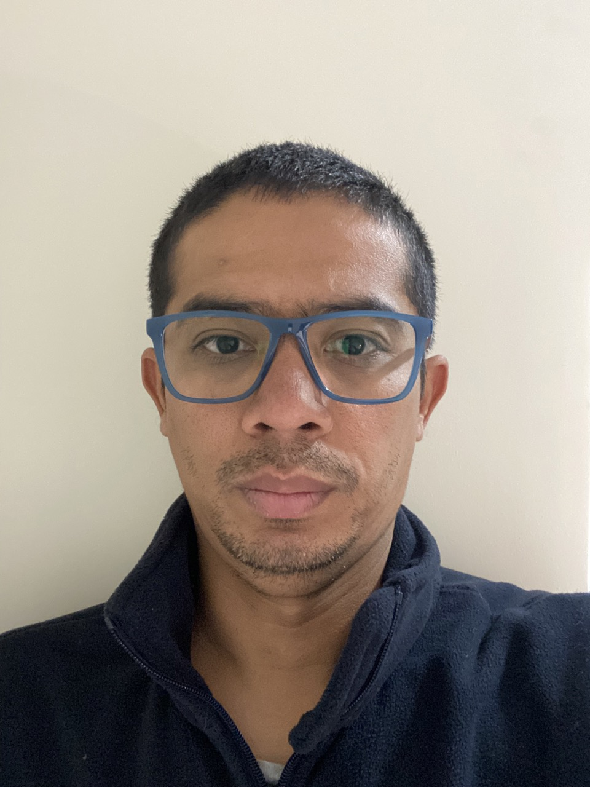

Curriculum Vitae

Leon Enrique Diaz Contreras
Electricista de Mantenimineto
Resumen:
Técnico Electricista, dedicado y comprometido al cumplimiento de mis labores, buscando siempre las
oportunidades para mejora mi crecimiento profesional. Capacidad para trabajar bajo presión o alto estrés, pro-activo,
inspirado por los desafíos con soluciones centradas en la iniciativa y la creatividad. Fuerte capacidad para la reflexión con deseo y motivación de aprender nuevas metodologías y tecnologías,
con liderazgo y habilidad para manejo de personal, coordinar y manejar distintas resposabilidades a la vez,
buena estructura de trabajo para la ejecución y seguimiento, fuerte mentalidad de servicio, excelentes habilidades interpersonales y de comunicación,
fuertes habilidades informáticas, impulsador social, manejo de grupos, manejo de conflictos, manejo de grupos multidisciplinarios de trabajo,
trabajo en equipo, responsable y puntual.
Experiancia Laboral:
- Febrero 2017 - Actualidad.
- Mobility SpA.
- Técnico de Field Service: En mantenimiento y Reinstalación de sistema de catenarias en Metro de Santiago (Taller Neptuno).
Como tambien instalación y Mantenimiento de transformadores, seccionadores, interruptores, rectificadores en sub-estaciónes SER de 110 kvac a 3 kvdc
de EFE.
- Maezo 2015 - Septiembre 2016
- Nestle Venezuela.
- Tecnico Electricista: Cumplimiento de Mantenimiento preventivo, correctivo y predictivo en líneas de producción, Inspecciones periódicas programadas,
levantamiento de avisos de mantenimiento, levantamiento de análisis de averías, cumplimento y cierre de órdenes de mantenimiento.
- Octubre 2008 - Diciembre 2014
- Inverciones Electromotor.
- Supervisor de Montaje Electrico: Instalación eléctrica en líneas de producción y alumbrado, fabricación e instalación de soporte (Corte, Esmerilado, Soldadura “Arco”),
canalización (EMT, Conduit, PVC, Bandeja tipo escalerilla y cablofil), cableado y conexión tanto en tablero de campo como en CCM, conexiones de motores. Puesta en macha
en empresas tales como: Nestlé-Venezuela, Central Azucarero el Palmar-Venezuela, Química Victoria-Venezuela, Cervecería Nacional-Panamá, entre otras.
Estudios:
- Tecnico Electrico en Mantenimiento
- Segundaria Completa
habilidades:
- Liderazgo.
- Pro-activo.
- Metodico.
- Trabajo en Equipo.
- Autodidacta.